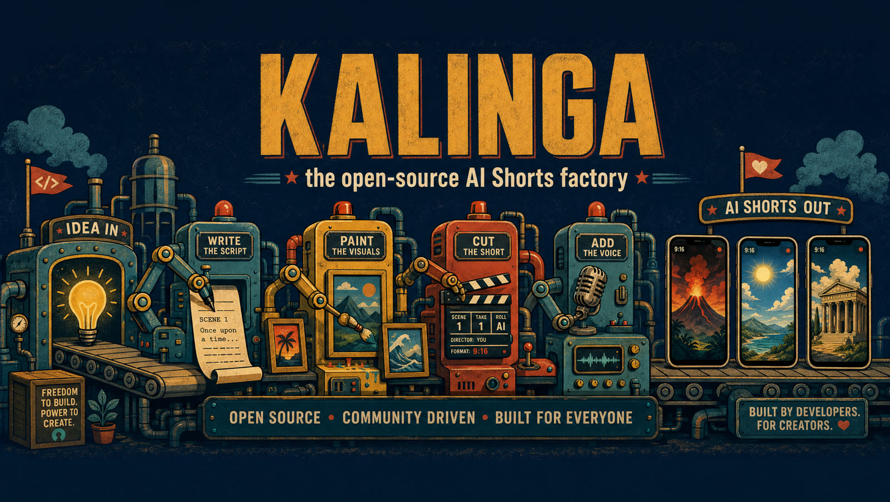
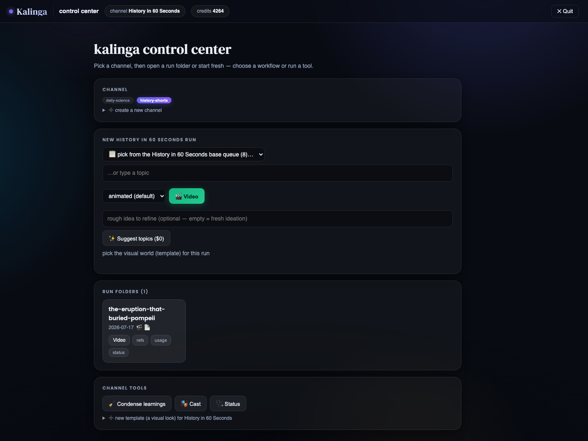
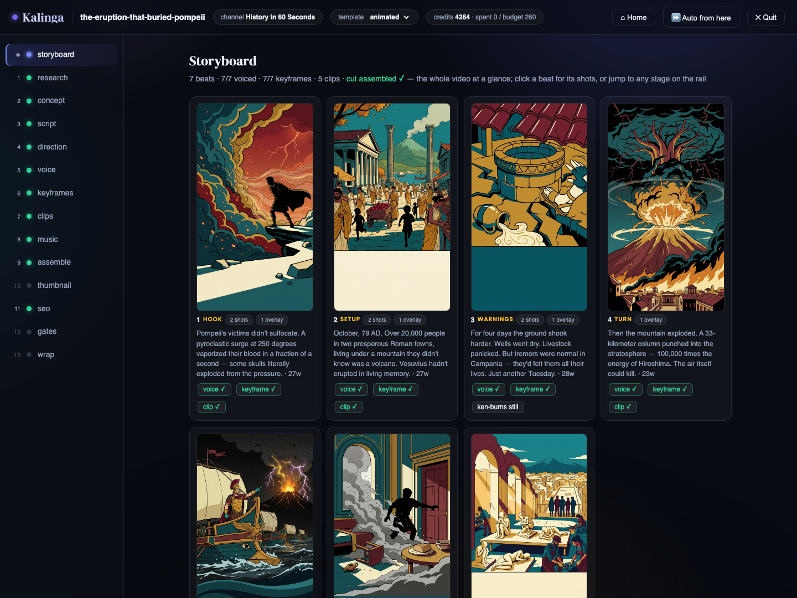
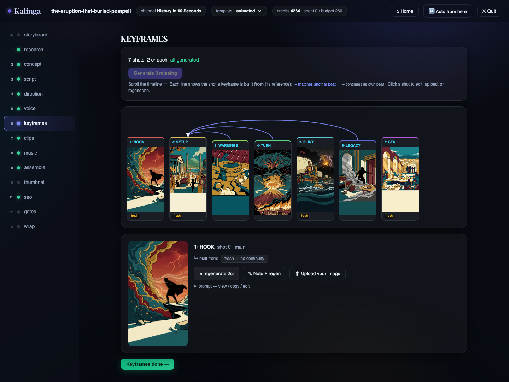
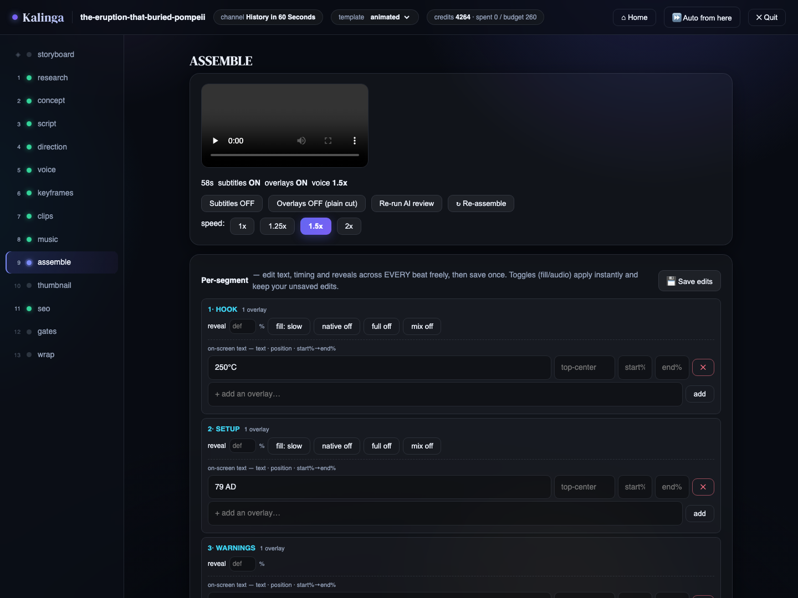

One topic in. A finished, upload-ready Short out.
Describe a channel once — premise, voice, beat structure, look — and Kalinga researches, writes, directs, generates and assembles a captioned 1080×1920 video. Creative runs on your Claude subscription at $0 marginal cost; generation runs on Higgsfield credits.
Two modes over the same artifacts — a local browser control center (stdlib HTTP, zero extra dependencies) and a CLI with headless one-shot, interactive, and per-stage commands. They resume each other freely.




Describe a channel idea in one line — get the premise, narrator persona, beat structure, voice/visual rules and starter SEO, all editable before scaffolding.
Designs a bespoke visual world per video: tease/reveal arc, per-beat visuals and motion, a keyframe continuity graph — under a facts lock so numbers never drift.
Free edge-tts with karaoke timings, ElevenLabs or Inworld, multi-character casts with per-line expression — or record your own voice, whisper-aligned.
Generated character avatars with a 36-image reference library each, so the same face appears every episode; plus an AI logo/watermark/banner kit.
Tech QC, virality scoring with an automatic hook rewrite, SEO lint — and an LLM that watches a frame per beat and proposes layer-attributed fixes.
Two-tier learnings distilled from your edits and critiques become standing instructions for every future script.
Rerun after any failure and cached stages skip; every superseded artifact is archived to .versions/ and restorable.
Research adapters, generation providers, TTS engines and UI actions are one-entry registries; a channel or a look is just a folder.
The repo ships two reference channels, each with a finished run already inside — something to explore before you spend a single credit.
The video-heavy demo: one pivotal moment in history per Short, told through generated moving clips. Shipped run: the eruption that buried Pompeii.
The image-heavy explainer: one surprising piece of science per ~60s Short, built from stills + Ken Burns motion — the cheaper style. Shipped run: why is the sky blue.
Python 3.9+, ffmpeg, and two one-time CLI logins. No API keys required.
# 1. Python deps python3 -m pip install -r requirements.txt # 2. ffmpeg (assembly; a libass build enables karaoke captions) brew install ffmpeg # 3. The two CLIs Kalinga drives (one-time logins) curl -fsSL https://claude.ai/install.sh | sh curl -fsSL https://raw.githubusercontent.com/higgsfield-ai/cli/main/install.sh | sh higgsfield auth login # 4. Guided setup, then explore the demo runs in the browser python3 kalinga.py init python3 kalinga.py ui # 5. Produce a Short python3 kalinga.py ship # headless one-shot python3 kalinga.py make --ui # stage-by-stage in the browser
The engine is channel-agnostic; the variable parts are one-entry registries.
| To add… | Edit |
|---|---|
| a research source | research.ADAPTERS |
| a generation backend | make_video.PROVIDERS |
| a TTS engine | make_video.ENGINES |
| a channel / a visual look | a folder in channels/ · a yaml in templates/ |
| a browser-UI action | webui/actions.py + webui/state.py |